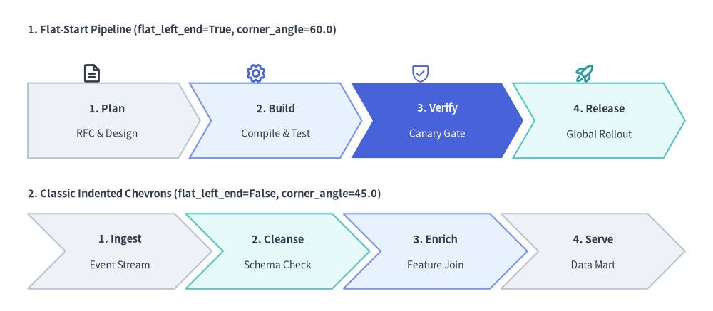
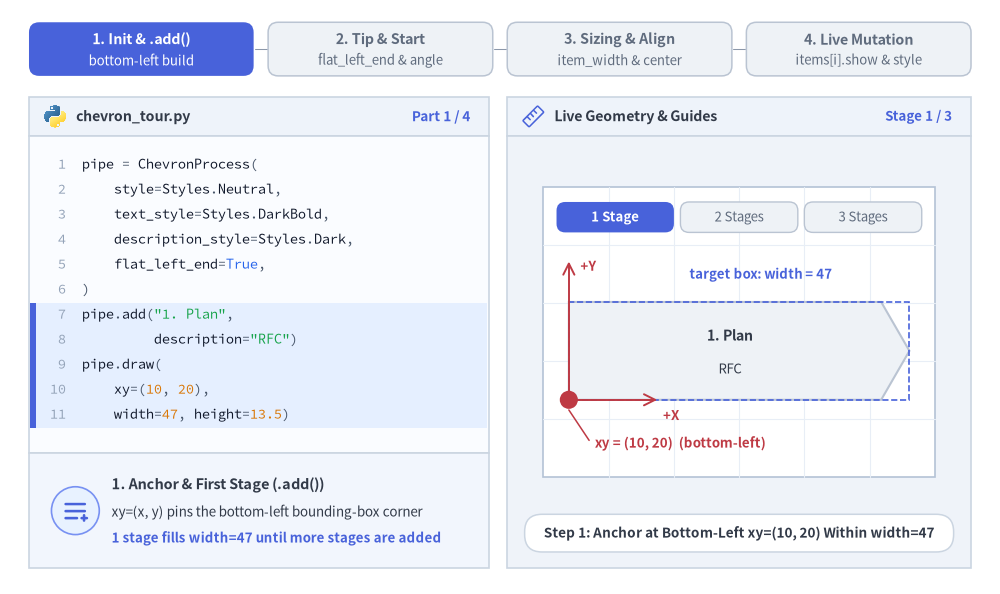
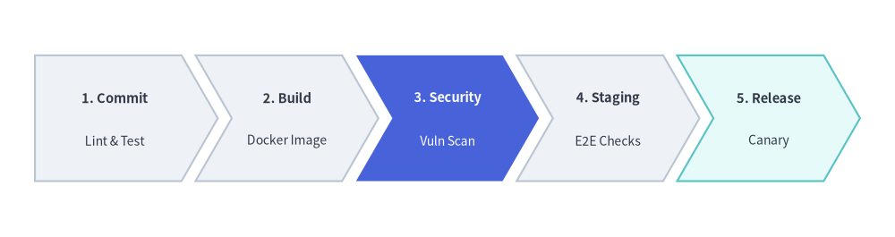
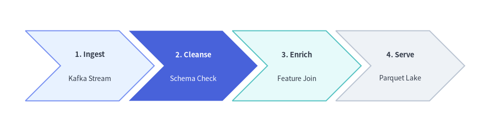

ChevronProcess Component
The ChevronProcess component draws horizontal, sequential process pipelines consisting of interlocking arrowhead blocks (chevrons).
It is the premier component for CI/CD delivery pipelines, phased development milestones, fulfillment lifecycles, and multi-step workflows.

Source Code
from drawlib.canvas import save, setup
from drawlib.icons import phosphor
from drawlib.smartarts import ChevronProcess
from drawlib.styles import Styles
from drawlib.text import text
setup(width=128, height=56)
# 1. Top Row: Flat-Start Chevron Pipeline (flat_left_end=True, corner_angle=60.0)
text((5, 50.5), "1. Flat-Start Pipeline (flat_left_end=True, corner_angle=60.0)", style=Styles.DarkBold.patch(text_size=10.5, halign="left"))
# Stage icons above each chevron
phosphor.file_text(xy=(16.5, 42.8), width=3.8, style=Styles.DarkBold)
phosphor.gear(xy=(46.0, 42.8), width=3.8, style=Styles.PrimaryBold)
phosphor.shield_check(xy=(75.5, 42.8), width=3.8, style=Styles.PrimaryFlat)
phosphor.rocket_launch(xy=(105.0, 42.8), width=3.8, style=Styles.SecondaryBold)
flat_pipe = ChevronProcess(
style=Styles.Neutral,
text_style=Styles.DarkBold.patch(text_size=10.5),
description_style=Styles.Dark.patch(text_size=10.0),
corner_angle=60.0,
spacing=2.0,
flat_left_end=True,
)
flat_pipe.add("1. Plan", description="RFC & Design")
flat_pipe.add("2. Build", description="Compile & Test", style=Styles.PrimaryNeutral)
flat_pipe.add(
"3. Verify",
description="Canary Gate",
style=Styles.PrimaryFlat,
text_style=Styles.WhiteBold.patch(text_size=10.5),
description_style=Styles.White.patch(text_size=10.0),
)
flat_pipe.add("4. Release", description="Global Rollout", style=Styles.SecondaryNeutral)
flat_pipe.draw(xy=(5, 27.5), width=118.0, height=13.5)
# 2. Bottom Row: Classic Indented Chevrons (flat_left_end=False, corner_angle=45.0)
text((5, 21.0), "2. Classic Indented Chevrons (flat_left_end=False, corner_angle=45.0)", style=Styles.DarkBold.patch(text_size=10.5, halign="left"))
indented_pipe = ChevronProcess(
style=Styles.Neutral,
text_style=Styles.DarkBold.patch(text_size=10.5),
description_style=Styles.Dark.patch(text_size=10.0),
corner_angle=45.0,
spacing=2.0,
flat_left_end=False,
)
indented_pipe.add("1. Ingest", description="Event Stream")
indented_pipe.add("2. Cleanse", description="Schema Check", style=Styles.SecondaryNeutral)
indented_pipe.add("3. Enrich", description="Feature Join", style=Styles.PrimaryNeutral)
indented_pipe.add("4. Serve", description="Data Mart")
indented_pipe.draw(xy=(5, 4.0), width=118.0, height=13.5)
save()
1. Core Concepts & Basic Usage
ChevronProcess constructs sequential interlocking pipelines step-by-step via .add(...), anchoring by default at the Bottom-Left (x, y) corner of the overall process bounding box (or its center when align="center"). You can customize start-edge and arrowhead tip geometry (flat_left_end, corner_angle, spacing), switch between auto-divided width and fixed per-stage item_width, and mutate or hide individual .items[i] stages in place without shifting sibling coordinates:

Source Code
from __future__ import annotations
import math
from drawlib.anim import Animation
from drawlib.canvas import save, setup
from drawlib.icons import code as code_icons
from drawlib.icons import phosphor
from drawlib.lines import line
from drawlib.shapes import chevron, circle, rectangle
from drawlib.smartarts import ChevronProcess, SourceCode, SourceCodeStyles
from drawlib.styles import Styles
from drawlib.text import text
W, H = 138.0, 82.0
setup(width=W, height=H)
anim = Animation(fps=10.0, loop=0)
CODE_TEXT_SIZE = 10.0
PT_TO_CANVAS = W / 720.0
FONT_CANVAS = CODE_TEXT_SIZE * PT_TO_CANVAS
LINE_H = FONT_CANVAS * 1.8
PAD_Y = FONT_CANVAS * 1.2
CODE_STYLES = SourceCodeStyles.get("default", font_lang="en", text_size=CODE_TEXT_SIZE).patch(
box_style=Styles.Neutral.patch(shape_fill_color=(0, 0, 0, 0), shape_line_width=0),
)
PANE_HEADER = Styles.Neutral.patch(
shape_fill_color=(238, 243, 250),
shape_line_color=(203, 213, 225),
shape_line_width=1.2,
shape_r=0.0,
)
EDITOR_BODY = Styles.Neutral.patch(
shape_fill_color=(250, 252, 255),
shape_line_color=(203, 213, 225),
shape_line_width=1.2,
shape_r=0.0,
)
TAKEAWAY_BODY = Styles.Neutral.patch(
shape_fill_color=(242, 246, 253),
shape_line_color=(203, 213, 225),
shape_line_width=1.2,
shape_r=0.0,
)
STUDIO_BODY = Styles.Neutral.patch(
shape_fill_color=(239, 243, 249),
shape_line_color=(203, 213, 225),
shape_line_width=1.2,
shape_r=0.0,
)
PART_ITEMS = [
("1. Init & .add()", "bottom-left build"),
("2. Tip & Start", "flat_left_end & angle"),
("3. Sizing & Align", "item_width & center"),
("4. Live Mutation", "items[i].show & style"),
]
def draw_step_bar(active_part: int) -> None:
"""Draw top 4-part progress bar (active_part is 1..4)."""
pill_w = 31.0
pill_h = 7.4
gap = 2.0
start_x = 4.0 + pill_w / 2.0
cy = 75.2
for idx, (label, sublabel) in enumerate(PART_ITEMS, start=1):
cx = start_x + (idx - 1) * (pill_w + gap)
if idx > 1:
prev_cx = cx - (pill_w + gap)
line(
(prev_cx + pill_w / 2.0 + 0.2, cy),
(cx - pill_w / 2.0 - 0.2, cy),
style=Styles.PrimaryBold if idx <= active_part else Styles.MutedThin,
)
if idx == active_part:
st = Styles.PrimaryFlat.patch(shape_r=1.4)
tst = Styles.WhiteBold.patch(text_size=10.3)
sub_tst = Styles.White.patch(text_size=9.5)
elif idx < active_part:
st = Styles.PrimaryNeutral.patch(shape_r=1.4, shape_line_width=1.1)
tst = Styles.PrimaryBold.patch(text_size=10.3)
sub_tst = Styles.Primary.patch(text_size=9.5)
else:
st = Styles.Neutral.patch(shape_r=1.4, shape_line_width=1.1)
tst = Styles.MutedBold.patch(text_size=10.3)
sub_tst = Styles.Muted.patch(text_size=9.5)
rectangle((cx, cy), width=pill_w, height=pill_h, style=st)
text((cx, cy + 1.35), label, style=tst)
text((cx, cy - 1.55), sublabel, style=sub_tst)
def draw_left_pane(
active_part: int,
code_lines: list[str],
hl_range: tuple[int, int],
icon_fn: object,
summary_title: str,
summary_line1: str,
summary_line2: str,
) -> None:
"""Draw left Python code editor + bottom concept takeaway card."""
x0, w = 4.0, 63.5
cx = x0 + w / 2.0
top_y = 63.2
header_h = 5.4
editor_h = 43.8
takeaway_h = 15.8
rectangle((cx, top_y + header_h / 2.0), width=w, height=header_h, style=PANE_HEADER)
code_icons.python((x0 + 3.6, top_y + header_h / 2.0), width=3.4, style=Styles.Neutral)
text(
(x0 + 6.5, top_y + header_h / 2.0),
"chevron_tour.py",
style=Styles.DarkBold.patch(text_size=10.2, halign="left"),
)
text(
(x0 + w - 2.6, top_y + header_h / 2.0),
f"Part {active_part} / 4",
style=Styles.PrimaryBold.patch(text_size=9.8, halign="right"),
)
rectangle((cx, top_y - editor_h / 2.0), width=w, height=editor_h, style=EDITOR_BODY)
hl_start, hl_end = hl_range
hl_top = top_y - PAD_Y - hl_start * LINE_H
hl_bot = top_y - PAD_Y - (hl_end + 1) * LINE_H
hl_cy = (hl_top + hl_bot) / 2.0
hl_h = hl_top - hl_bot
rectangle(
(cx, hl_cy),
width=w - 0.6,
height=hl_h,
style=Styles.Neutral.patch(shape_fill_color=(229, 239, 255), shape_line_width=0),
)
rectangle(
(x0 + 0.55, hl_cy),
width=0.9,
height=hl_h,
style=Styles.PrimaryFlat.patch(shape_line_width=0),
)
SourceCode.draw(
xy=(x0, top_y),
width=w,
code="\n".join(code_lines),
styles=CODE_STYLES,
code_lang="python",
show_linenum=True,
align="top_left",
)
take_cy = 3.6 + takeaway_h / 2.0
rectangle((cx, take_cy), width=w, height=takeaway_h, style=TAKEAWAY_BODY)
circle(
(x0 + 6.4, take_cy),
radius=3.3,
style=Styles.PrimaryNeutral.patch(shape_line_width=1.2),
)
icon_fn((x0 + 6.4, take_cy), width=3.8, style=Styles.PrimaryBold) # type: ignore[operator]
text(
(x0 + 11.4, take_cy + 3.6),
summary_title,
style=Styles.DarkBold.patch(text_size=10.4, halign="left"),
)
text(
(x0 + 11.4, take_cy - 0.2),
summary_line1,
style=Styles.Dark.patch(text_size=9.7, halign="left"),
)
text(
(x0 + 11.4, take_cy - 3.8),
summary_line2,
style=Styles.PrimaryBold.patch(text_size=9.6, halign="left"),
)
def draw_geometry_studio(param_badge: str, footer_caption: str) -> tuple[float, float]:
"""Draw right geometry lab shell, inner coordinate sheet with subtle grid, and footer."""
x0, w = 70.0, 64.0
cx = x0 + w / 2.0
top_y = 63.2
header_h = 5.4
body_h = 59.6
rectangle((cx, top_y + header_h / 2.0), width=w, height=header_h, style=PANE_HEADER)
phosphor.ruler((x0 + 3.6, top_y + header_h / 2.0), width=3.4, style=Styles.Primary)
text(
(x0 + 6.5, top_y + header_h / 2.0),
"Live Geometry & Guides",
style=Styles.DarkBold.patch(text_size=10.2, halign="left"),
)
text(
(x0 + w - 2.6, top_y + header_h / 2.0),
param_badge,
style=Styles.PrimaryBold.patch(text_size=9.6, halign="right"),
)
rectangle((cx, 3.6 + body_h / 2.0), width=w, height=body_h, style=STUDIO_BODY)
sheet_cx, sheet_cy = cx, 36.2
sheet_w, sheet_h = 54.0, 40.0
sx0, sy0 = sheet_cx - sheet_w / 2.0, sheet_cy - sheet_h / 2.0
rectangle(
(sheet_cx, sheet_cy),
width=sheet_w,
height=sheet_h,
style=Styles.Neutral.patch(
shape_fill_color=(255, 255, 255),
shape_line_color=(180, 194, 214),
shape_line_width=1.2,
),
)
g_st = Styles.MutedThin.patch(line_color=(232, 238, 246), line_width=0.8)
for gx in range(1, 6):
vx = sx0 + gx * (sheet_w / 6.0)
line((vx, sy0), (vx, sy0 + sheet_h), style=g_st)
for gy in range(1, 5):
vy = sy0 + gy * (sheet_h / 5.0)
line((sx0, vy), (sx0 + sheet_w, vy), style=g_st)
rectangle(
(cx, 8.4),
width=59.2,
height=5.2,
style=Styles.Neutral.patch(
shape_fill_color=(255, 255, 255),
shape_line_color=(203, 213, 225),
shape_line_width=1.1,
shape_r=2.4,
),
text=footer_caption,
text_style=Styles.DarkBold.patch(text_size=9.8),
)
return sheet_cx, sheet_cy
def draw_sub_pills(scx: float, labels: list[str], active_idx: int) -> None:
"""Draw 3-step tracker pills near the top of the studio sheet."""
pw, ph, pgap = 16.2, 4.2, 0.9
p_start = scx - (3 * pw + 2 * pgap) / 2.0 + pw / 2.0
for idx, lbl in enumerate(labels):
px = p_start + idx * (pw + pgap)
if idx == active_idx:
pst = Styles.PrimaryFlat.patch(shape_r=1.2)
ptst = Styles.WhiteBold.patch(text_size=9.5)
elif idx < active_idx:
pst = Styles.PrimaryNeutral.patch(shape_r=1.2, shape_line_width=1.0)
ptst = Styles.PrimaryBold.patch(text_size=9.5)
else:
pst = Styles.Neutral.patch(shape_r=1.2, shape_line_width=1.0)
ptst = Styles.Muted.patch(text_size=9.5)
rectangle((px, 52.0), width=pw, height=ph, style=pst, text=lbl, text_style=ptst)
TITLE_DARK = Styles.DarkBold.patch(text_size=10.2)
DESC_DARK = Styles.Dark.patch(text_size=9.5)
TITLE_WHITE = Styles.WhiteBold.patch(text_size=10.2)
DESC_WHITE = Styles.White.patch(text_size=9.5)
# =========================================================================
# Part 1: Init & .add() — Step-by-Step Bottom-Left Pipeline Construction
# =========================================================================
BUILD_STATES = [
(
1,
3.2,
[
"pipe = ChevronProcess(",
" style=Styles.Neutral,",
" text_style=Styles.DarkBold,",
" description_style=Styles.Dark,",
" flat_left_end=True,",
")",
'pipe.add("1. Plan",',
' description="RFC")',
"pipe.draw(",
" xy=(10, 20),",
" width=47, height=13.5)",
],
(6, 10),
"Stage 1 / 3",
"Step 1: Anchor at Bottom-Left xy=(10, 20) Within width=47",
"1. Anchor & First Stage (.add())",
"xy=(x, y) pins the bottom-left bounding-box corner",
"1 stage fills width=47 until more stages are added",
),
(
2,
3.2,
[
"pipe = ChevronProcess(",
" style=Styles.Neutral, ...,",
" flat_left_end=True)",
'pipe.add("1. Plan",',
' description="RFC")',
"pipe.add(",
' "2. Build",',
' description="Test",',
" style=Styles.PrimaryFlat,",
" text_style=Styles.WhiteBold)",
"pipe.draw((10, 20), 47, 13.5)",
],
(5, 9),
"Stage 2 / 3",
"Step 2: Interlock Focal Stage 2 Across Shared width=47",
"2. Interlocking Stage + Per-Item Style",
"Each .add() subdivides width=47 with interlocking tips",
"Override style=Styles.PrimaryFlat on 1 focal stage",
),
(
3,
3.5,
[
"pipe = ChevronProcess(",
" ..., flat_left_end=True)",
'pipe.add("1. Plan",',
' description="RFC")',
'pipe.add("2. Build", ...,',
" style=Styles.PrimaryFlat)",
"pipe.add(",
' "3. Ship",',
' description="Canary",',
" style=Styles.SecondaryNeutral)",
"pipe.draw((10, 20), 47, 13.5)",
],
(6, 9),
"Stage 3 / 3",
"Step 3: Complete 3-Stage Pipeline Filling width=47",
"3. Balanced 3-Stage Pipeline",
"Calm Neutral & SecondaryNeutral ground outer stages",
"Stage 2 stands out cleanly with WhiteBold contrast",
),
]
for b_idx, (n_stages, dur, code_b, hl_rng, badge_txt, foot_txt, s_t, s_1, s_2) in enumerate(BUILD_STATES):
with anim.frame(duration=dur):
draw_step_bar(1)
draw_left_pane(1, code_b, hl_rng, phosphor.list_plus, s_t, s_1, s_2)
scx, scy = draw_geometry_studio(badge_txt, foot_txt)
draw_sub_pills(scx, ["1 Stage", "2 Stages", "3 Stages"], b_idx)
px0, py0, pw_tot, ph_tot = 78.5, 26.8, 47.0, 13.5
pipe = ChevronProcess(
style=Styles.Neutral,
text_style=TITLE_DARK,
description_style=DESC_DARK,
corner_angle=60.0,
spacing=1.5,
flat_left_end=True,
)
pipe.add("1. Plan", description="RFC")
if n_stages >= 2:
pipe.add(
"2. Build",
description="Test",
style=Styles.PrimaryFlat,
text_style=TITLE_WHITE,
description_style=DESC_WHITE,
)
if n_stages >= 3:
pipe.add("3. Ship", description="Canary", style=Styles.SecondaryNeutral)
pipe.draw(xy=(px0, py0), width=pw_tot, height=ph_tot)
# Dashed width=47 target bounding box
rectangle(
(px0 + pw_tot / 2.0, py0 + ph_tot / 2.0),
width=pw_tot,
height=ph_tot,
style=Styles.PrimaryDashed.patch(shape_fill_color=(0, 0, 0, 0), shape_line_width=1.2),
)
text(
(px0 + pw_tot / 2.0 + 3.0, py0 + ph_tot + 3.8),
"target box: width = 47",
style=Styles.PrimaryBold.patch(text_size=9.5),
)
# Bottom-Left xy anchor dot + +X / +Y Cartesian axes
line(
(px0, py0),
(px0, py0 + ph_tot + 5.6),
arrow_head="->",
style=Styles.DangerBold.patch(line_width=1.4),
)
text(
(px0 + 1.6, py0 + ph_tot + 5.0),
"+Y",
style=Styles.DangerBold.patch(text_size=9.5, halign="left"),
)
line(
(px0, py0),
(px0 + 12.2, py0),
arrow_head="->",
style=Styles.DangerBold.patch(line_width=1.4),
)
text(
(px0 + 13.0, py0 - 2.1),
"+X",
style=Styles.DangerBold.patch(text_size=9.5, halign="left"),
)
circle((px0, py0), radius=1.25, style=Styles.DangerFlat)
line(
(px0, py0 - 1.4),
(px0 + 2.8, py0 - 5.6),
style=Styles.DangerBold.patch(line_width=1.1),
)
text(
(px0 + 3.6, py0 - 6.0),
"xy = (10, 20) (bottom-left)",
style=Styles.DangerBold.patch(text_size=9.6, halign="left"),
)
# =========================================================================
# Part 2: Tip & Start — flat_left_end & corner_angle (10°..80°)
# =========================================================================
TIP_STATES = [
(
False,
60.0,
1.8,
3.3,
(6, 6),
"flat_left_end=False",
"flat_left_end=False (Default): Indented Notch on Stage 1",
"Indented Start (flat_left_end=False)",
"Default False indents every chevron including Stage 1",
"Matches repeating multi-row or continuation flows",
),
(
True,
60.0,
1.8,
3.3,
(6, 6),
"flat_left_end=True",
"flat_left_end=True: Clean Vertical Left Edge on Stage 1",
"Flat Start Edge (flat_left_end=True)",
"Draws Stage 1 as a flat-backed pentagon at x0",
"Aligns cleanly against left margins and axis guides",
),
(
True,
42.0,
2.6,
3.4,
(4, 5),
"corner_angle = 42°",
"corner_angle=42.0, spacing=2.6: Deeper Tips & Wider Gap",
"Tip Angle & Gap (corner_angle, spacing)",
"Lower angles (42° vs 60°) deepen arrowhead tips",
"Valid corner_angle range: 10.0° to 80.0°",
),
]
for t_idx, (flat_left, c_ang, spc, dur, hl_rng, badge_txt, foot_txt, s_t, s_1, s_2) in enumerate(TIP_STATES):
code_t = [
"pipe = ChevronProcess(",
" style=Styles.Neutral,",
" text_style=Styles.DarkBold,",
" description_style=Styles.Dark,",
f" corner_angle={c_ang},",
f" spacing={spc},",
f" flat_left_end={flat_left},",
")",
'pipe.add("Plan", description="RFC")',
'pipe.add("Build", ...)',
"pipe.draw((10, 20), 47, 13.0)",
]
with anim.frame(duration=dur):
draw_step_bar(2)
draw_left_pane(2, code_t, hl_rng, phosphor.caret_double_right, s_t, s_1, s_2)
scx, scy = draw_geometry_studio(badge_txt, foot_txt)
draw_sub_pills(scx, ["Indented 60°", "Flat-Start 60°", "Sharp 42°"], t_idx)
px0, py0, pw_tot, ph_tot = 78.5, 27.5, 47.0, 13.0
cy_p = py0 + ph_tot / 2.0
x_ind = (ph_tot / 2.0) / math.tan(math.radians(c_ang))
w_itm = (pw_tot - 2.0 * spc - x_ind) / 3.0
pipe = ChevronProcess(
style=Styles.Neutral,
text_style=TITLE_DARK,
description_style=DESC_DARK,
corner_angle=c_ang,
spacing=spc,
flat_left_end=flat_left,
)
pipe.add("Plan", description="RFC")
pipe.add(
"Build",
description="Test",
style=Styles.PrimaryFlat,
text_style=TITLE_WHITE,
description_style=DESC_WHITE,
)
pipe.add("Ship", description="Prod", style=Styles.SecondaryNeutral)
pipe.draw(xy=(px0, py0), width=pw_tot, height=ph_tot)
if t_idx == 0:
# Highlight indented V-notch on Stage 1
line((px0, py0 + ph_tot), (px0 + x_ind, cy_p), style=Styles.DangerBold.patch(line_width=2.2))
line((px0 + x_ind, cy_p), (px0, py0), style=Styles.DangerBold.patch(line_width=2.2))
circle((px0 + x_ind, cy_p), radius=1.05, style=Styles.DangerFlat)
line(
(px0 + x_ind * 0.5, py0 - 0.6),
(px0 + 4.5, 20.8),
style=Styles.DangerBold.patch(line_width=1.1),
)
text(
(px0 + 5.4, 20.4),
"indented notch (flat_left_end=False)",
style=Styles.DangerBold.patch(text_size=9.5, halign="left"),
)
elif t_idx == 1:
# Highlight clean vertical left edge on Stage 1
line((px0, py0), (px0, py0 + ph_tot), style=Styles.PrimaryBold.patch(line_width=2.6))
line((px0, py0 - 0.8), (px0 + 4.2, 20.8), style=Styles.PrimaryBold.patch(line_width=1.1))
text(
(px0 + 5.2, 20.4),
"vertical start edge (flat_left_end=True)",
style=Styles.PrimaryBold.patch(text_size=9.5, halign="left"),
)
else:
# Highlight sharper 42 deg tip & wider spacing=2.6 gap
tip_x = px0 + w_itm + x_ind
sh_x = px0 + w_itm
line((sh_x, py0 + ph_tot), (tip_x, cy_p), style=Styles.DangerBold.patch(line_width=2.2))
line((tip_x, cy_p), (sh_x, py0), style=Styles.DangerBold.patch(line_width=2.2))
lx = sh_x + 0.35 * x_ind
ly = py0 + 0.35 * (ph_tot / 2.0)
line((lx, ly - 0.5), (lx - 1.8, 21.8), style=Styles.DangerBold.patch(line_width=1.1))
text(
(px0 + 2.5, 20.4),
"corner_angle = 42° (sharper tip)",
style=Styles.DangerBold.patch(text_size=9.5, halign="left"),
)
# Spacing callout above gap between Stage 1 and Stage 2
g_x1, g_x2 = sh_x, sh_x + spc
line((g_x1, py0 + ph_tot + 0.7), (g_x1, py0 + ph_tot + 3.6), style=Styles.PrimaryBold.patch(line_width=1.2))
line((g_x2, py0 + ph_tot + 0.7), (g_x2, py0 + ph_tot + 3.6), style=Styles.PrimaryBold.patch(line_width=1.2))
text(
((g_x1 + g_x2) / 2.0 + 2.0, py0 + ph_tot + 5.2),
"spacing = 2.6",
style=Styles.PrimaryBold.patch(text_size=9.5),
)
# =========================================================================
# Part 3: Sizing & Align — width vs. item_width & align="center"
# =========================================================================
SIZE_STATES = [
(
"auto_width",
3.3,
[
"pipe = ChevronProcess(",
" ..., spacing=1.8,",
" flat_left_end=True)",
'pipe.add("Plan", description="RFC")',
'pipe.add("Build", ...)',
'pipe.add("Ship", ...)',
"",
"# Auto-divide total width=47",
"pipe.draw(",
" xy=(10, 20),",
" width=47, height=13)",
],
(8, 10),
"width = 47 (auto)",
"item_width=None: Auto-Divides width=47 Across Stages",
"Auto-Divided Total Width (width=47)",
"Computes item_width automatically from total width",
"Keeps overall pipeline locked to exact target span",
),
(
"fixed_item",
3.3,
[
"pipe = ChevronProcess(",
" ..., spacing=1.8,",
" flat_left_end=True)",
'pipe.add("Plan", description="RFC")',
'pipe.add("Build", ...)',
'pipe.add("Ship", ...)',
"",
"# Fixed body width per stage",
"pipe.draw(",
" xy=(10, 20), height=13,",
" item_width=12.5)",
],
(8, 10),
"item_width = 12.5",
"Explicit item_width=12.5: Fixed Body Width per Stage",
"Explicit Stage Width (item_width=12.5)",
"Each chevron body gets exact width=12.5 units",
"Overrides total width so pipeline grows with N",
),
(
"center_align",
3.4,
[
"pipe = ChevronProcess(",
" ..., spacing=1.8,",
" flat_left_end=True)",
'pipe.add("Plan", description="RFC")',
'pipe.add("Build", ...)',
'pipe.add("Ship", ...)',
"",
"# Center bounding box on xy",
"pipe.draw(",
" xy=(34, 27), width=47,",
' height=13, align="center")',
],
(8, 10),
'align = "center"',
'align="center": Centers Bounding Box on xy=(cx, cy)',
'Centered Anchor (align="center")',
"Centers total bounding box horizontally & vertically",
"Ideal when aligning pipelines to canvas midlines",
),
]
for s_idx, (mode, dur, code_s, hl_rng, badge_txt, foot_txt, s_t, s_1, s_2) in enumerate(SIZE_STATES):
with anim.frame(duration=dur):
draw_step_bar(3)
draw_left_pane(3, code_s, hl_rng, phosphor.arrows_out_line_horizontal, s_t, s_1, s_2)
scx, scy = draw_geometry_studio(badge_txt, foot_txt)
draw_sub_pills(scx, ["width = 47", "item_width=12.5", 'align="center"'], s_idx)
px0, py0, pw_tot, ph_tot = 78.5, 27.5, 47.0, 13.0
spc = 1.8
x_ind = (ph_tot / 2.0) / math.tan(math.radians(60.0))
pipe = ChevronProcess(
style=Styles.Neutral,
text_style=TITLE_DARK,
description_style=DESC_DARK,
corner_angle=60.0,
spacing=spc,
flat_left_end=True,
)
pipe.add("Plan", description="RFC")
if mode == "center_align":
pipe.add("Build", description="Test", style=Styles.PrimaryNeutral)
else:
pipe.add(
"Build",
description="Test",
style=Styles.PrimaryFlat,
text_style=TITLE_WHITE,
description_style=DESC_WHITE,
)
pipe.add("Ship", description="Prod", style=Styles.SecondaryNeutral)
if mode == "auto_width":
pipe.draw(xy=(px0, py0), width=pw_tot, height=ph_tot)
cal_y = py0 + ph_tot + 3.0
line((px0, py0 + ph_tot + 0.8), (px0, cal_y + 1.2), style=Styles.PrimaryBold.patch(line_width=1.2))
line(
(px0 + pw_tot, py0 + ph_tot + 0.8),
(px0 + pw_tot, cal_y + 1.2),
style=Styles.PrimaryBold.patch(line_width=1.2),
)
line((px0, cal_y), (px0 + pw_tot, cal_y), arrow_head="<->", style=Styles.PrimaryBold.patch(line_width=1.4))
text((scx, cal_y + 2.8), "width = 47 (auto-divided)", style=Styles.PrimaryBold.patch(text_size=9.5))
circle((px0, py0), radius=1.2, style=Styles.DangerFlat)
text(
(px0 + 2.2, 20.6),
'xy (default align="bottom_left")',
style=Styles.DangerBold.patch(text_size=9.5, halign="left"),
)
elif mode == "fixed_item":
w_fixed = 12.5
pipe.draw(xy=(px0, py0), height=ph_tot, item_width=w_fixed)
# Ghost vertical tick showing previous width=47 right edge
line(
(px0 + pw_tot, py0),
(px0 + pw_tot, py0 + ph_tot),
style=Styles.MutedDashed.patch(line_width=1.1),
)
cal_y = py0 + ph_tot + 3.0
line((px0, py0 + ph_tot + 0.8), (px0, cal_y + 1.2), style=Styles.PrimaryBold.patch(line_width=1.2))
line(
(px0 + w_fixed, py0 + ph_tot + 0.8),
(px0 + w_fixed, cal_y + 1.2),
style=Styles.PrimaryBold.patch(line_width=1.2),
)
line(
(px0, cal_y),
(px0 + w_fixed, cal_y),
arrow_head="<->",
style=Styles.PrimaryBold.patch(line_width=1.4),
)
text(
(px0 + w_fixed / 2.0 + 3.2, cal_y + 2.8),
"item_width = 12.5",
style=Styles.PrimaryBold.patch(text_size=9.5),
)
tot_fixed = 3.0 * w_fixed + 2.0 * spc + x_ind
line(
(px0, 22.8),
(px0 + tot_fixed, 22.8),
arrow_head="<->",
style=Styles.MutedBold.patch(line_width=1.1),
)
text(
(px0 + tot_fixed / 2.0, 19.8),
f"total span = {tot_fixed:.1f} (3 × 12.5 + gaps + tip)",
style=Styles.DarkBold.patch(text_size=9.5),
)
else:
cx_a, cy_a = scx, 34.0
pipe.draw(xy=(cx_a, cy_a), width=pw_tot, height=ph_tot, align="center")
rectangle(
(cx_a, cy_a),
width=pw_tot,
height=ph_tot,
style=Styles.PrimaryDashed.patch(shape_fill_color=(0, 0, 0, 0), shape_line_width=1.3),
)
# Red center crosshair extending cleanly outside bounding box
line((cx_a - 25.5, cy_a), (cx_a - 23.5, cy_a), style=Styles.DangerBold.patch(line_width=1.5))
line((cx_a + 23.5, cy_a), (cx_a + 25.5, cy_a), style=Styles.DangerBold.patch(line_width=1.5))
line((cx_a, cy_a + 6.5), (cx_a, cy_a + 10.6), style=Styles.DangerBold.patch(line_width=1.5))
line((cx_a, cy_a - 10.2), (cx_a, cy_a - 6.5), style=Styles.DangerBold.patch(line_width=1.5))
circle(
(cx_a, cy_a),
radius=1.6,
style=Styles.Neutral.patch(shape_fill_color=(255, 255, 255), shape_line_width=0),
)
circle((cx_a, cy_a), radius=1.15, style=Styles.DangerFlat)
text(
(cx_a, 20.4),
'xy = (34, 27) • align="center"',
style=Styles.DangerBold.patch(text_size=9.6),
)
# =========================================================================
# Part 4: Live Mutation — .items[i].style & .items[i].show
# =========================================================================
MUTATE_STATES = [
(
"all_shown",
3.3,
[
"pipe = ChevronProcess(",
" style=Styles.Neutral, ...,",
" flat_left_end=True)",
'pipe.add("Plan", description="RFC")',
'pipe.add("Build",',
' description="Test")',
'pipe.add("Ship",',
' description="Prod")',
"# Access stages via pipe.items[i]",
"pipe.draw((10, 20), 47, 13.0)",
],
(3, 8),
"pipe.items[0..2]",
"All 3 ChevronItem Instances Registered in pipe.items[0..2]",
"Inspectable Stage List (pipe.items)",
".add() appends mutable ChevronItem models in order",
"Modify text, style, or show any time before .draw()",
),
(
"spotlight_mid",
3.4,
[
"pipe = ChevronProcess(",
" style=Styles.Neutral, ...)",
'pipe.add("Plan", description="RFC")',
'pipe.add("Build", ...)',
'pipe.add("Ship", ...)',
"mid = pipe.items[1]",
"mid.style = Styles.PrimaryFlat",
"mid.text_style = Styles.WhiteBold",
"mid.description_style = (",
" Styles.White)",
"pipe.draw((10, 20), 47, 13.0)",
],
(5, 9),
"items[1].style",
"Deferred Style Override: Spotlight items[1] Before .draw()",
"Deferred Style Mutation (.items[1].style)",
"Re-theme active pipeline stages without rebuilding",
"Great for step-by-step state & slide animations",
),
(
"hide_mid",
3.6,
[
"pipe = ChevronProcess(",
" style=Styles.Neutral, ...)",
'pipe.add("Plan", description="RFC")',
'pipe.add("Build", ...)',
'pipe.add("Ship", ...)',
"",
"# Hide stage; sibling slots stay!",
"pipe.items[1].show = False",
"",
"pipe.draw((10, 20), 47, 13.0)",
],
(6, 7),
"items[1].show=False",
"items[1].show = False: Hides Stage Without Shifting Siblings",
"Slot-Preserving Visibility (.show = False)",
"Skips rendering items[1] while keeping N-stage layout",
"items[0] and items[2] hold exact X positions",
),
]
for m_idx, (m_mode, dur, code_m, hl_rng, badge_txt, foot_txt, s_t, s_1, s_2) in enumerate(MUTATE_STATES):
with anim.frame(duration=dur):
draw_step_bar(4)
draw_left_pane(4, code_m, hl_rng, phosphor.sliders_horizontal, s_t, s_1, s_2)
scx, scy = draw_geometry_studio(badge_txt, foot_txt)
draw_sub_pills(scx, ["All Shown", ".style Override", ".show = False"], m_idx)
px0, py0, pw_tot, ph_tot = 78.5, 26.2, 47.0, 13.0
cy_m = py0 + ph_tot / 2.0
spc = 1.8
x_ind = (ph_tot / 2.0) / math.tan(math.radians(60.0))
w_itm = (pw_tot - 2.0 * spc - x_ind) / 3.0
pipe = ChevronProcess(
style=Styles.Neutral,
text_style=TITLE_DARK,
description_style=DESC_DARK,
corner_angle=60.0,
spacing=spc,
flat_left_end=True,
)
pipe.add("Plan", description="RFC")
pipe.add("Build", description="Test")
pipe.add("Ship", description="Prod", style=Styles.SecondaryNeutral)
if m_mode == "spotlight_mid":
pipe.items[1].style = Styles.PrimaryFlat
pipe.items[1].text_style = TITLE_WHITE
pipe.items[1].description_style = DESC_WHITE
elif m_mode == "hide_mid":
pipe.items[1].show = False
pipe.draw(xy=(px0, py0), width=pw_tot, height=ph_tot)
# Stage center X positions for badges & ghost slot
cx0 = px0 + (w_itm + 0.5 * x_ind) / 2.0
cx1 = px0 + 1.5 * w_itm + spc + 0.5 * x_ind
cx2 = px0 + 2.5 * w_itm + 2.0 * spc + 0.5 * x_ind
for idx_b, bx in enumerate((cx0, cx1, cx2)):
if m_mode == "spotlight_mid" and idx_b == 1:
bst = Styles.PrimaryFlat.patch(shape_r=1.1)
btst = Styles.WhiteBold.patch(text_size=9.5)
elif m_mode == "hide_mid" and idx_b == 1:
bst = Styles.MutedDashed.patch(
shape_fill_color=(248, 250, 252),
shape_line_color=(148, 163, 184),
shape_line_width=1.1,
shape_r=1.1,
)
btst = Styles.MutedBold.patch(text_size=9.5)
else:
bst = Styles.PrimaryNeutral.patch(shape_r=1.1, shape_line_width=1.0)
btst = Styles.PrimaryBold.patch(text_size=9.5)
rectangle((bx, 44.0), width=13.4, height=3.9, style=bst, text=f"items[{idx_b}]", text_style=btst)
line((bx, 42.0), (bx, py0 + ph_tot + 0.6), style=Styles.MutedThin.patch(line_width=1.0))
if m_mode == "all_shown":
text(
(scx, 20.2),
"3 mutable ChevronItem models in pipe.items",
style=Styles.DarkBold.patch(text_size=9.5),
)
elif m_mode == "spotlight_mid":
text(
(scx, 20.2),
"items[1].style = Styles.PrimaryFlat (in-place)",
style=Styles.PrimaryBold.patch(text_size=9.5),
)
else:
# Subtle dashed ghost chevron in preserved middle slot
chevron(
xy=(cx1, cy_m),
width=w_itm,
height=ph_tot,
corner_angle=60.0,
style=Styles.MutedDashed.patch(
shape_fill_color=(248, 250, 252),
shape_line_color=(148, 163, 184),
shape_line_width=1.3,
),
)
text(
(cx1 + 0.9, cy_m),
"slot\npreserved",
style=Styles.MutedBold.patch(text_size=9.5),
)
text(
(scx, 20.2),
"items[0] & items[2] keep exact X coordinates",
style=Styles.PrimaryBold.patch(text_size=9.5),
)
save()
- Step-by-Step Construction & Anchor (
xy,align): Append stages in sequence via.add(text, description=..., style=...)and render atxy=(x, y)—anchored at the Bottom-Left bounding-box corner by default (align="bottom_left") or centered viaalign="center". - Start Edge & Tip Geometry (
flat_left_end,corner_angle,spacing): Setflat_left_end=Truefor a clean vertical left border on Stage 1 (orFalsefor a classic indented notch), and tunecorner_angle(10.0°–80.0°) andspacingto control arrowhead depth and inter-stage gaps. - Auto-Divided
widthvs. Fixeditem_width(scale): Leaveitem_width=Noneto automatically subdivide totalwidthacross all stages, pass an explicititem_widthto lock per-stage body width, or resize proportionally aroundxyviascale. - Live
.items[i]Mutation & Slot-Preserving.show: Mutatepipe.items[i].styleortext_stylebefore.draw()to spotlight active milestones, or setpipe.items[i].show = Falseto hide a stage while keeping sibling X coordinates completely unchanged.
2. Quick Example: CI/CD Pipeline
from drawlib.canvas import setup
from drawlib.smartarts import ChevronProcess
from drawlib.styles import Styles
setup(width=128, height=34)
pipeline = ChevronProcess(
style=Styles.Neutral,
text_style=Styles.DarkBold.patch(text_size=10.5),
description_style=Styles.Dark.patch(text_size=10.0),
corner_angle=60.0,
spacing=2.0,
flat_left_end=True,
)
pipeline.add("1. Commit", description="Lint & Test")
pipeline.add("2. Build", description="Docker Image")
pipeline.add(
"3. Security",
description="Vuln Scan",
style=Styles.PrimaryFlat,
text_style=Styles.WhiteBold.patch(text_size=10.5),
description_style=Styles.White.patch(text_size=10.0),
)
pipeline.add("4. Staging", description="E2E Checks")
pipeline.add("5. Release", description="Canary", style=Styles.SecondaryNeutral)
pipeline.draw(xy=(5, 8), width=118.0, height=18.0)

3. Classic Indented Chevrons with Explicit item_width & corner_angle
Setting flat_left_end=False (the default) renders every stage—including the first—as a classic indented chevron, while passing an explicit item_width to draw(...) gives every stage an exact fixed body width instead of auto-dividing a bounding container width. You can also adjust corner_angle (valid range: 10.0 to 80.0 degrees) to control arrowhead sharpness, and mutate returned ChevronItem instances before drawing.
from drawlib.canvas import save, setup
from drawlib.smartarts import ChevronProcess
from drawlib.styles import Styles
setup(width=126, height=34)
etl = ChevronProcess(
style=Styles.Neutral,
text_style=Styles.DarkBold.patch(text_size=10.5),
description_style=Styles.Dark.patch(text_size=10.0),
corner_angle=45.0,
spacing=2.5,
flat_left_end=False,
)
etl.add("1. Ingest", description="Kafka Stream", style=Styles.PrimaryNeutral)
transform_stage = etl.add("2. Cleanse", description="Schema Check")
etl.add("3. Enrich", description="Feature Join", style=Styles.SecondaryNeutral)
etl.add("4. Serve", description="Parquet Lake")
# Mutate a ChevronItem (or access via etl.items[1]) before calling draw()
transform_stage.style = Styles.PrimaryFlat
transform_stage.text_style = Styles.WhiteBold.patch(text_size=10.5)
transform_stage.description_style = Styles.White.patch(text_size=10.0)
etl.draw(xy=(6.5, 8.0), height=18.0, item_width=24.0)
save()

4. Geometry & Coordinate Anchor
- Coordinate Anchor (
xy&align): By default (align="bottom_left"),draw(xy=...)anchors the bottom-left corner(x, y)of the entire process bounding box. Passingalign="center"centers the overall bounding box horizontally and vertically onxy. flat_left_end:False(default): All stages—including the first—have an indented left notch matching the arrowhead tip angle.True: The first chevron is drawn as a flat-backed pentagon with a clean vertical left border.
corner_angle: Angle of the arrowhead tip in degrees (valid range:10.0to80.0, default60.0). Lower angles (45.0) produce deeper, sharper arrowheads; higher angles (70.0) produce flatter tips.- Automatic vs. Explicit Stage Width (
widthvs.item_width):- When
item_width=None(default),draw()automatically calculates each stage's body width from the totalwidth,spacing, and arrowhead indent (x_indent = (height / 2) / tan(corner_angle)):item_width = (width - (N - 1) * spacing - x_indent) / N - When
item_widthis explicitly provided,widthis ignored and each stage usesitem_widthdirectly (total_width = N * item_width + (N - 1) * spacing + x_indent).
- When
5. API Reference
Constructor (ChevronProcess)
ChevronProcess(
*,
style: Style,
text_style: Style,
description_style: Style,
corner_angle: float = 60.0,
spacing: float = 1.5,
flat_left_end: bool = False,
)
| Parameter | Type | Default | Description |
|---|---|---|---|
style |
Style |
(Required) | Default shape style applied to chevron blocks. |
text_style |
Style |
(Required) | Default text style for primary stage titles. |
description_style |
Style |
(Required) | Default text style for secondary description lines. |
corner_angle |
float |
60.0 |
Arrowhead tip angle in degrees (10.0 <= corner_angle <= 80.0). |
spacing |
float |
1.5 |
Horizontal gap between consecutive chevrons (> 0). |
flat_left_end |
bool |
False |
If True, replaces the first chevron's left indent with a flat vertical edge. |
Adding & Inspecting Stages (.add() & .items)
pipeline.add(
text: str,
*,
description: str = "",
style: Style | None = None,
text_style: Style | None = None,
description_style: Style | None = None,
show: bool = True,
) -> ChevronItem
| Parameter | Type | Default | Description |
|---|---|---|---|
text |
str |
(Required) | Primary stage title displayed inside the chevron. |
description |
str |
"" |
Optional secondary description line displayed below text. |
style |
Style | None |
None |
Custom shape style for this stage (falls back to constructor style). |
text_style |
Style | None |
None |
Custom title text style for this stage (falls back to constructor text_style). |
description_style |
Style | None |
None |
Custom description text style (falls back to constructor description_style). |
show |
bool |
True |
Whether to render this stage. Setting False hides the chevron while preserving layout slots for sibling stages. |
pipeline.items -> list[ChevronItem]: Returns the list of registeredChevronIteminstances in order.ChevronItemModel Fields: Each returned item exposes mutable attributes resolved atdraw()time:text: strstyle: Styletext_style: Styledescription_style: Styledescription: str = ""show: bool = True
Drawing (.draw())
pipeline.draw(
xy: tuple[float, float],
width: float = 90.0,
height: float = 12.0,
item_width: float | None = None,
align: Literal["bottom_left", "center"] = "bottom_left",
scale: float = 1.0,
) -> Self
| Parameter | Type | Default | Description |
|---|---|---|---|
xy |
tuple[float, float] |
(Required) | Anchor coordinate (x, y) of the process bounding box (bottom-left by default, or center when align="center"). |
width |
float |
90.0 |
Total bounding width allocated across all stages (used when item_width=None). |
height |
float |
12.0 |
Vertical height of each chevron block (> 0). |
item_width |
float | None |
None |
Explicit body width per chevron block. Overrides automatic width division when set. |
align |
Literal["bottom_left", "center"] |
"bottom_left" |
Anchor alignment of xy relative to the overall process bounding box. |
scale |
float |
1.0 |
Proportional scale factor around anchor xy (> 0). |